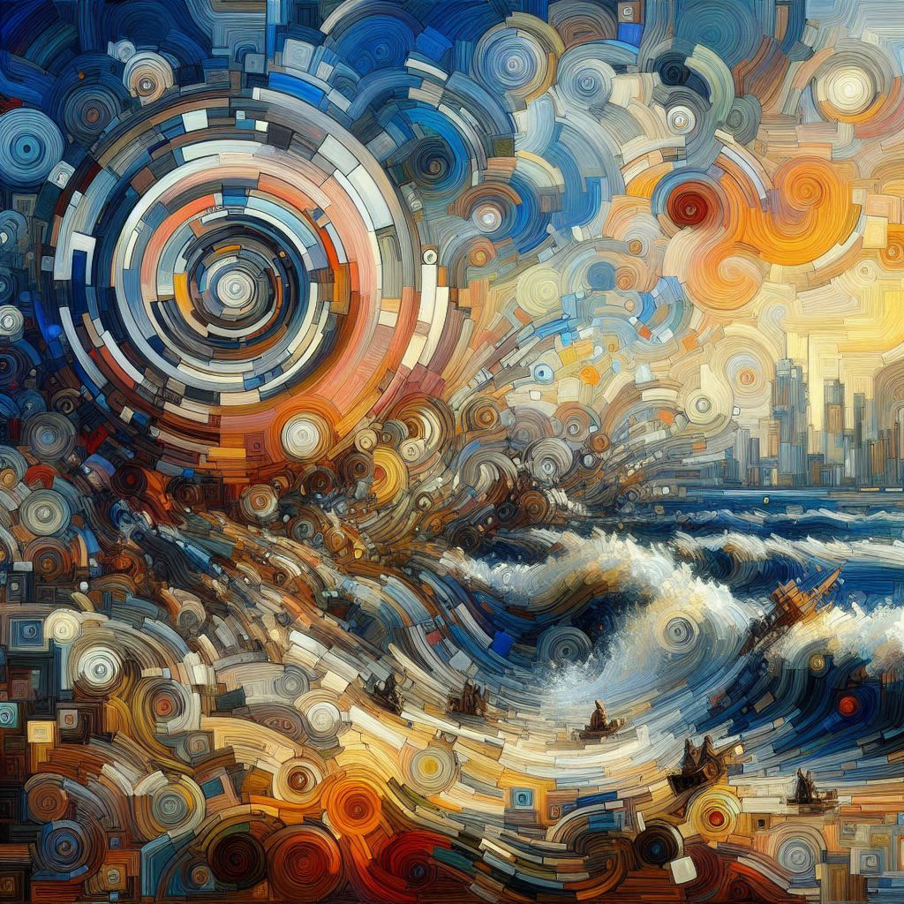

Scroll, get inspired, create..
Turning thoughts into lines, letting imagination flow freely. #sketch
Soft strokes of inspiration

0Capturing thoughts, emotions, and moments in between. #journaling
The quiet hum of ink on paper
Capturing the essence of the past in timeless stone. #stoneandstory
Chiseling whispers